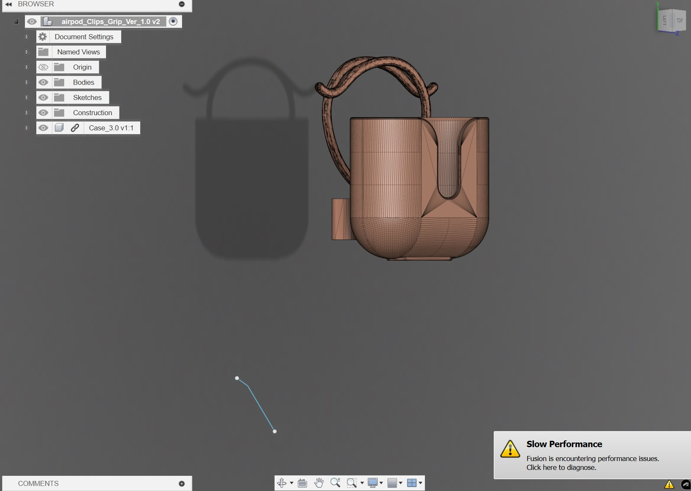

Standard Airpods often feel insecure during high-intensity movement, so I developed this custom sport adapter to improve retention. I modeled these by taking measurements of my own ear geometry and designing an adapter that locks the earbud into the concha without causing uncomfortable pressure points. It is essentially an exercise in human-factors engineering, requiring me to balance long-term comfort with the physical force needed to keep the hardware in place while training. It's a great example of applying small-scale manufacturing to improve the usability of consumer tech.
